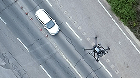
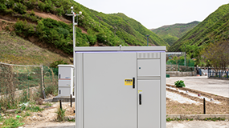
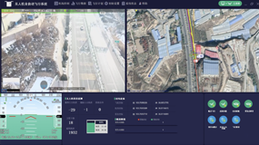
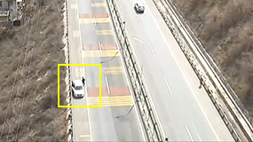
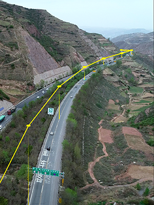
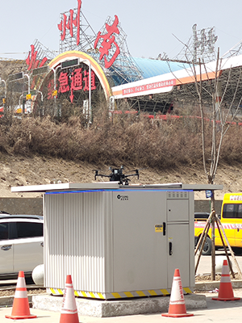
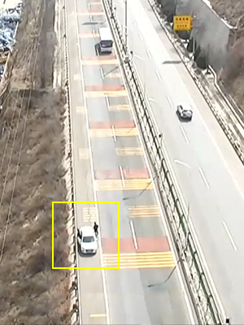
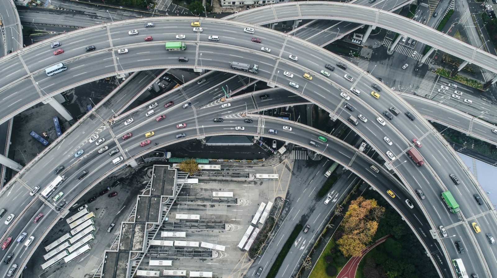

交通无人机全自动巡逻解决方案

自动飞行系统赋能大疆DJI工业无人机全自动进行交通巡逻作业，有效应对及时性、突发性工作

无需专业无人机警员飞手，有效解决了专业飞手交警数量缺口大问题

3D-GIS自主规划飞行航线，巡检任务自由设定，满足定时定点巡逻需求

图像识别技术和图像控制算法精确识别、锁定车辆、道路等目标,对违停、压线、占道等违章车辆进行快速取证、对道路进行疏导
方案价值
减轻巡逻警员的劳动强度和劳动时间，可实现3-5分钟突发警情快速出勤
解放人工

随时应急
高频作业

智能化
接口开放
方案特点
"5G+无人机交通自动巡逻系统实现无人值守，交通违法行为实时监控、抓拍，并通过喊话系统劝阻纠正、消除隐患
基于3D-基于3D-GIS，系统自动规划无人机航线，实现相对于路面海拔高度的
—致飞行

3D-GIS规划航迹
自动机场就近部署在作业现场，自动起飞，高精度视觉自动降落。自动进行电池更换，支持高频作业，三分钟即可再次起飞作业

自动起降换电
通过图像识别技术实时对车辆、道路等特征目标进行精确定位,实时控制云台对目标进行跟踪拍摄,实现道路锁定、车辆锁定、车牌识别、违章分析等,通过图像识别精
佳拍摄目标对象

自动Al识别、锁定与拍摄
方案场景
“5G+无人机"交通自动巡逻系统实现无人值守，交通违法行为实时监控、抓拍，并通过喊话系统劝匪征、消除隐患
交通无人机全自动巡逻
场景描述
- 固定式无人机自动机场部署在交通沿线作业环境中，无巡逻任务时，无人机存储在机库中，有任务时,机械瘠自动安装无人机电池并开启能门，无人机自动飞出作业。
- 基于3D-GIS或―维地图,后台软件自动规划无人机飞行航线
- 无人机通过图像识别技术实时对车辆、道路等特征目标进行精确定位，实时控制云台对目标进行跟踪拍摄，锁定车辆、道路等，通过图像识别精街拍摄目标对象。
- 无人机巡逻视频实时回传，云端交通事件A系统进行交通违去却别、交通事件发现等工作，对交通违法行为实时监控、抓拍，并通过城话系统及时劝阻!征、消除隐患。

使用产品
-
 MindCube 智方A30系列
MindCube 智方A30系列
固定式无人机自动机场
+
-
 DJI-M300 RTK
+
DJI-M300 RTK
+
-
 DJI-H20T
DJI-H20T
解决方案
- 固定式（或者移动式）无人机自动机场部署在重要治安巡逻区域，无巡逻任务时，无人机存储在机库中，有任务时，机械臂自动安装无人机电池并开启舱门，无人机自动飞出作业。
- 基于3D-GIS或二维地图，选择目标地点或巡逻区域，后台软件自动规划无人机飞行航线。
- 无人机通过图像识别技术实时对车辆、人员等特征目标进行精确定位，实时控制云台对目标进行跟踪拍摄，锁定车辆、人员等，通过图像识别精准拍摄。
- 无人机依据规划的飞行航迹，在RTK厘米级精度定位信号下进行复杂业务自主飞行，并根据航线预设目标，无人机在指定位置悬停，控制云台指向目标并进行目标拍摄、识别。
- 无人机巡逻视频实时回传，AI云平台实时匹配异常场景（嫌疑人员、嫌疑车辆、人员聚集等），分析人群行为、危险对象并自动告警上报警情位置与管辖区域，及时进行相应处理。
方案价值
-
 提高频次 有效解决了专业飞手警员数量缺口大的问题，提高了日常巡逻的作业频次
提高频次 有效解决了专业飞手警员数量缺口大的问题，提高了日常巡逻的作业频次 -
预防事故 实现了突发警情时快速出勤，可有效预防二次事故的发生,保证线交警工作人员安全
自动飞行赋能行业生产力
立即咨询